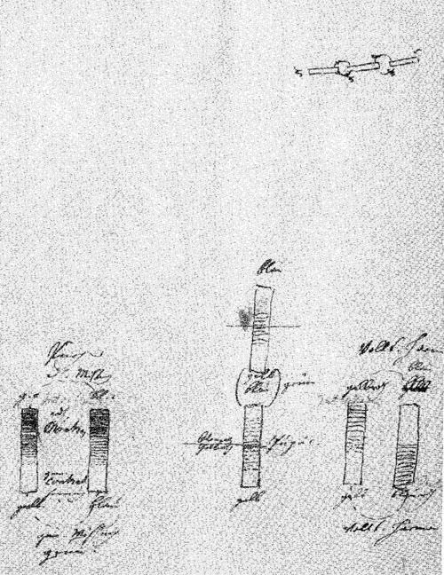
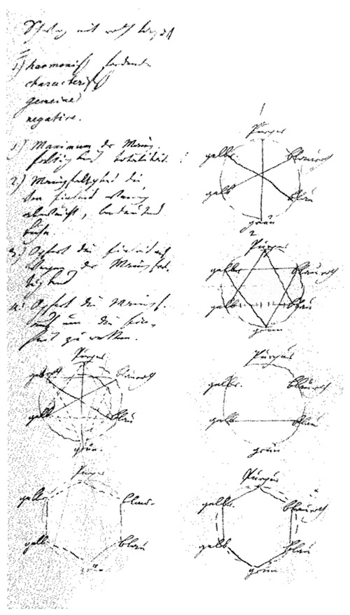

Schwarz mit rot tingiert
I.) harmonisch fordernde
charakteristische
gemeine
negative.
Entwurf Symbolische Annäherung zum Magneten:
und Harmonie der Farben:
Jena am 19 Nov. 1798
Erste Versuche mit Herrn Güldemeister wegen des nicht Unterscheidens der Farben
Seine Augen sind grau und haben etwas mattes doch ist der Stern zusammengezogen. Er sieht weit, gut, kann kleinen Druck bei Nacht lesen Sein Vater und Oheim ist in demselbigen Falle.
Abstufung von Hell und Dunkel bemerkt er sehr zart.
Weiß sieht er rein und ohne Beimischung.
Ein lichtes Grau erklärt er für schön hellblau überhaupt die drei ersten Stufen von grau auf meiner optischen Tafel für blau.
Das dunkelste grau so wie schwarz erklärt er für braun und gibt dieser Farbe hauptsächlich die Unterscheidung von der vorigen daß sie gar nichts blaues haben.
Das Blaue erkennt er für blau sowohl das dunkle als das helle.
Gelb nennt er gelb.
Im Orange unterschied er gelb und rot, und bezeichnete auch dabei daß er nicht das mindeste blau sehe.
Zinnober erklärt er für entschieden rot.
Auf die Frage ob er nichts gelbes darinne sehe, sagte er ja denn allem roten läge gelb zum Grunde.
Im blauen hingegen sehe er nichts rotes.
Rosenfarb aber freilich nicht schön gefärbtes Papier erklärt er für blau auch etwas rotes fand er darinne, und erklärte es für einen Übergang von Zinnober zum blauen.
Karmin, in einer weißen Porzellantasse aufgestrichen nannte er rot. Bei näherer Beobachtung wollte er auch etwas bläuliches daran sehen.
Bis hierher klingt alles (verständlich) besonders wenn man es nach den Deduktionen unserer Farbenlehre ansieht. Aber nun erscheint das Hauptphänomen, welches seine ersten Äußerungen die ich bisher nicht aufgezeichnet habe sondern nur nachhole, so paradox macht.
Er scheint nämlich kein grün zu sehen sondern an dessen Stelle ein gelbrot.
Sehr gelb grün erklärt er für gelb in ziemlich rein gemischtem grün wollte er kaum etwas blauliches erkennen hingegen appuierte er immer auf das rot was er sehe.
Seine ersten Äußerungen klingen daher immer höchst sonderbar und sind konfuser als seine Ansicht der Farben.
So nannte er orange zuerst grün denn er sagte daß ihm die Bäume also erschienen; von der Rose, behauptete er sie sähe ihm völlig so blau aus als ein blauer Himmel. Doch zweifle ich hieran, weil er doch den Karmin für rot erkannte und nur wenig blau darinne finden konnte. Freilich sähe er das schwach rosenfarbe Papier auch für blau an.
Die Phänomene die wir andern auch wohl Facta nennen sind gewiß und bestimmt ihrer Natur nach hingegen oft unbestimmt und schwankend in so fern sie erscheinen. Der Naturforscher sucht das Bestimmte der Erscheinungen zu fassen und fest zu halten, er ist in einzelnen Fällen aufmerksam nicht allein wie die Phänomene erscheinen sondern auch wie sie erscheinen sollten. Es gibt, wie ich besonders in dem Fache das ich bearbeite oft bemerken kann, viele empirische Brüche die man wegwerfen muß um ein reines konstantes Phänomen zu erhalten; allein sobald ich mir das erlaube so stelle ich schon eine Art von Ideal auf.
Es ist aber dennoch ein großer Unterschied ob man, wie Theoristen tun, einer Hypothese zu lieb ganze Zahlen in die Brüche schlägt, oder ob man einen empirischen Bruch der Idee des reinen Phänomens aufopfert.
Denn da der Beobachter nie das reine Phänomen mit Augen sieht, sondern vieles von seiner Geistesstimmung, von der Stimmung des Organs im Augenblick, von Licht, Luft, Witterung, Körpern, Behandlung und tausend andern Umständen abhängt; so ist ein Meer auszutrinken wenn man sich an Individualität des Phänomens halten und diese beobachten, messen, wägen und beschreiben will.
Bei meiner Naturbeobachtung und Betrachtung bin ich folgender Methode, so viel als möglich war, besonders in den letzten Zeiten treu geblieben.
Wenn ich die Konstanz und Konsequenz der Phänomene, bis auf einen gewissen Grad, erfahren habe, so ziehe ich daraus ein empirisches Gesetz und schreibe es den künftigen Erscheinungen vor. Passen Gesetz und Erscheinungen in der Folge völlig, so habe ich gewonnen, passen sie nicht ganz so werde ich auf die Umstände der einzelnen Fälle aufmerksam gemacht und genötigt neue Bedingungen zu suchen unter denen ich die widersprechenden Versuche reiner darstellen kann; zeigt sich aber manchmal, unter gleichen Umständen, ein Fall, der meinem Gesetze widerspricht, so sehe ich, daß ich mit der ganzen Arbeit vorrucken und mir einen höhern Standpunkt suchen muß.
Dieses wäre also, nach meiner Erfahrung, derjenige Punkt wo der menschliche Geist sich den Gegenständen in ihrer Allgemeinheit am meisten nähern, sie zu sich heranbringen, sich mit ihnen (wie wir es sonst in der gemeinen Empirie tun) auf eine rationelle Weise gleichsam amalgamieren kann.
Was wir also von unserer Arbeit vorzuweisen hätten wäre:
Hier wäre wenn der Mensch sich zu bescheiden wüßte vielleicht das letzte Ziel unserer Kräfte. Denn hier wird nicht nach Ursachen gefragt, sondern nach Bedingungen unter welchen die Phänomene erscheinen, es wird ihre konsequente Folge, ihr ewiges Wiederkehren unter tausenderlei Umständen, ihre Einerleiheit und Veränderlichkeit angeschaut und angenommen, ihre Bestimmtheit anerkannt und durch den menschlichen Geist wieder bestimmt.
Eigentlich möchte diese Arbeit nicht spekulativ genannt werden, denn es sind am Ende doch nur wie mich dünkt, die praktischen und sich selbst rektifizierenden Operationen des gemeinen Menschenverstandes, der sich in einer höhern Sphäre zu üben wagt.
Von meinen physikalischen Annäherungen und Schematisierungen, die nun freilich auch sehr im Fluge geschehen, will ich folgendes melden: sie stehen jetzt in folgender Reihe:
magnetische,
turmalinische,
elektrische,
galvanische,
perkinische.
———
chromatische,
sonore.
———
schmeckbare,
riechbare.
und nun einiges zur Erläuterung
Die magnetischen bleiben die allgemeinsten, weil sie auf einen spezifischen Körper beschränkt sind, sie beziehen sich allein aufs Eisen und würden, nach meiner Überzeugung, gleich etwas ganz anderes sein sobald sie an einem andern Körper entdeckt würden.
Die turmalinischen sind nicht allein dem Turmalin angehörig, sondern auch dem Hyacinth, Chrisolith, Smaragd. Die Wirkung zeigt sich nicht in gleicher Temperatur, wie die magnetische, es gehört Erhitzung und Abkühlung dazu, leichte ganz fremde Teile werden angezogen und abgestoßen. Sie gehen also schon ins allgemeinere doch ist noch Polarität des Körpers da.
Elektrische Wirkungen können an allen Körpern hervorgebracht werden, an einigen mehr als an andern. Wenn ich den Magnet und Turmalin Hermaphroditen nennen möchte, so würden die elektrischen Wirkungen schon getrennte Geschlechter haben. Diese beiden Materien; oder mit welchem symbolischen Namen man die wirklich entgegengesetzte Erscheinung benennen will, werden an verschiednen Körpern durch Reiben, Erschüttern, Schmelzen und Abkühlen erregt. Die magnetische und turmalinische sind immer mit dem Körper verbunden, die elektrische kann von demjenigen Körper der sie hervorgebracht hat, abgesondert werden. Von den beiden ersten ist noch nicht gewiß in wie fern sie auf organische Naturen wirken? Die elektrische wirkt auf die Nerven. Von ihrer übrigen allgemein zerschmetternden, entzündenden Wirkung nichts zu sagen.
Galvanische Wirkungen. Sie scheinen besonders auf Metalle reduziert zu sein, zum eminenten Phänomen braucht man zweierlei Art; ich vermute aber daß einerlei Metall schon auch dazu hinreichend ist. Ob man es damit zur Erscheinung bringen wird, weiß ich nicht. Sie wirken eminent auf Nerve und Muskel, affizieren allgemein das Auge als Licht, den Geschmack als Säure, den Muskel indem sie Zucken machen, so daß man sich überzeugen konnte: ein fortdauernder Galvanischer Prozeß sei der Lebensprozeß organischer Naturen.
Die perkinischen Wirkungen sind eine Modifikation der Galvanischen. Jene sind reizend, diese schmerzstillend, welches auf eins hinaus kommt. Sie sind nicht zu verachten, ob gleich die Erfahrungen sehr schwer werden anzustellen sein.
NB. Hier würde nun meo Voto der sogenannte tierische Magnetismus stehen. Da nämlich zwei organische Naturen durch Näherungen, ja fast ideale Berührungen allgemein reizende oder soporifere Wirkungen hervor bringen. Die Schwierigkeit hierüber reine Versuche anzustellen wird dieses Kapitel, bis auf ein glückliches genialisches Wagestück, das zu erwarten steht, noch lange zurückhalten.